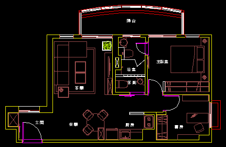
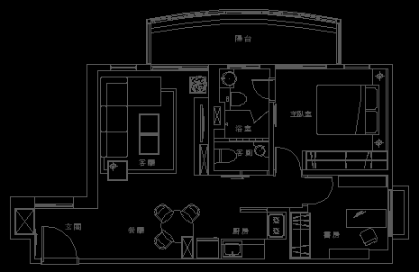

任務：以下室內平面配置圖，請把圖面中所有物件改為同一個圖層，方便日後「插入圖塊」或「外部參考」，以供套圖作業使用。


※每個人及公司的作法均不同，希望大家可以先分享自己的作法，再來看以下我分享的方式！
練習完成後請說明「步驟」、「貼圖」，回答的會員朋友可以得到（威望值 +6）。
備用： https://app.box.com/s/9iy6vh4gwaoi3pda9n6i
可以使用「圖層轉換器」LAYTRANS指令，全部轉換成同一圖層。
請先回覆您的方式再來看解答吧！
※大陸地區會員請到「优酷」觀看視頻： http://v.youku.com/v_show/id_XNjU2ODQyMzk2.html